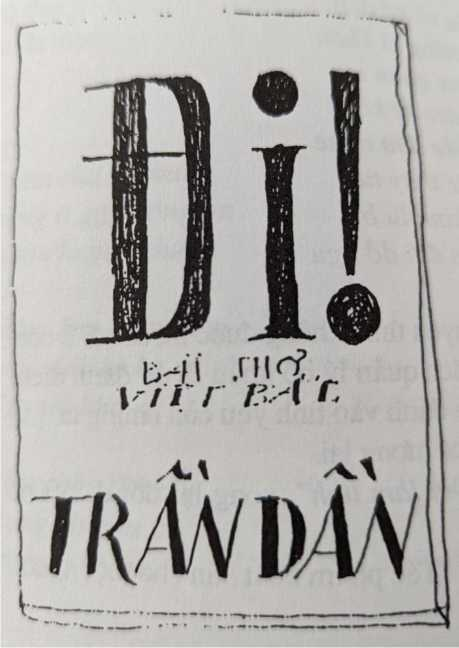

Đạo lý không có tương lai."
1/1
Thẩm tra chỗ dựa. Tối họp: Tội ác địa chủ. Bảo vệ đường sắt.
3/1
Nhà Thu.
Tối: Trấn áp địa chủ. Họp du kích trao đổi vũ khí. Họp thanh niên, thiếu nhi.
8/1
Điếm tố khổ Nông Hội
9/1
Nhà Thu.
Thông tin kẻ khấu hiệu: Có khô’tô'khô’. Đánh đô'địa chủ cường hào đại gian đại ác. Hoan nghênh đại hội nhân dân. Sáng suốt chọn người vào thẩm phán xã.
Tố khổ Nông Hội.
11/1
Nhà Thu.
Tối: công thâín Hoàn (Nguyễn Văn Nga)
Đấu Nguyễn Văn Nga
1, Anh Tung lên
- Mày mất thóc, em mày lấy, mày vu cho tao mày đánh tao.
- Nga, mày có đánh anh Tụng không?
- Không.
Đả đảo...
- Mày có đánh không?
- Có.
Đả đảo thái độ ngoan cố...
- Mày ngoảnh mặt lên đây. Khoanh tay lại. Bây giờ mày đã nhận mày kê’ lại đi.
- Thua quý toà con mất thóc về hỏi, chả nhẽ ở nhà mất còn có ai, anh Tụng...
- Anh với mày à?
- Ông Tụng, con hỏi ông Tụng, xong có đánh.
- Nga! Đánh thế nào? Hỏi! Cho phép mày quay về ông bà nhân dân mà nói về việc đánh anh Tụng. Phải thua ông bà.
- Thua ông bà nhân dân, con mất thóc con đánh anh Tụng à ông Tụng. Con trói vào cột.
- Mày có treo anh Tụng lên không?
- Con có treo ông Tụng lên ạ...
Đả đảo...
- Nga! Hỏi! Về sau thóc ai lấy?
- Con không biết ạ...
Kết luận: - Chúng ta nhân dân thấy bộ mặt ngoan cố tên địa chủ. Nó đã nhận là thóc con cháu nó lấy mà nó đổ cho anh Tụng, nó đánh.
2. Ống Sử
- Mày đánh tao nát cả nguời cả ngợm ra.
- Con chí đánh nát nguôi thôi ạ. Không đánh vào ngợm ạ.
- Tao đói quá tao đi bẻ mấy bắp ngô. Tao lấy của nhân dân chứ có lấy của nhà mày đâu? Sao mày lột quần tao ra, chắp 10 roi đánh!
- Mày có đánh ông Sử không?
-Có.
- Mày đánh bằng gì?
- Con đánh bằng roi tre ạ. Ông ấy ăn cắp ngô, con đi tuần thì con đánh ông ấy chảy máu đít.
3. Em anh Niêm
- Anh tao là Niệm. Anh tao với mày cùng đi buôn. Mày có hiềm vói anh tao. Ngày 13-7 mày thủ mưu giết anh tao.
- Việc giết anh Niệm và anh Ân thế nào? Nói ra! Kể! Từ đầu chí cuối!
Đả đảo...
Kiên quyết đánh đổ...
- Thua quý toà, thằng Phồn thằng Nghĩa sai con đi giết anh Niệm.
- Nga!
- Dạ.
-Tao hỏi mày chứ tao hỏi đâu thằng Phồn thằng Nghĩa.
- Con cầm đá đập óc ông Niệm...
- Còn một việc nữa, trong đêm hôm ấy mày giết anh Ân ra sao?
- Con với Khoát, Nghĩa, Tộ, Tính, Hậu. Ông Hậu chém.
- Chém thế nào?
- Chém vào nguôi.
- Mày làm gì?
- Con lấy gậy đánh.
- Đánh thế nào? Kể sao cứ nhát một thế!
- Đánh vào người.
- Xong sao?
- Xong vứt xuống sông
Kết luận: Ngày 15/7/1950 nó giết 2 ông: anh Niệm và anh Ân.
4. Chi Vinh
- Nga! Mày sai chồng tao đi lấy thẻ, mày về mày đánh chồng tao vãi cứt.
- Đội giảm tô sắp về, mày sợ mày chỉ định chồng tao đi dân công mày giết chồng tao.
- Thưa quý toà, con có đánh ông ấy đâu?
Đả đảo...
- Nga! Nhân dân nói vu cho mày à? Mày có đánh không?
- Dạ, ông bà con nhân dân đã vạch thì con có tội ạ!
- Mày có đánh không?
- Con ở nhà con...
- Không khiến mày nói dài. Có hay không?
-Có.
- Nga! Mày có buôn lậu không? Mày làm gì?
- Con đi buôn lậu.
- Mày làm gì cơ mà? Mày làm chức vụ gì?
- Con buôn lậu.
Dần chúng: - Mày làm ủy viên hành chính.
- Con làm ủy viên hành chính.
9. Bà Chính
- 1952 tao khổ sở ở nhà ông Khôi, tối tao rủa chân chua đi ngủ, mày sang nhà tao nói chuyện một lúc mày đè tao mày hiếp. Mày doạ nói ở đâu mày giết ở đấy. Tao cho mày nói. Mày nói lên.
- Mày có hiếp bà Chính không?
- Con đi từ 51 cơ mà.
- Một người đàn bà ai lại nói vu cho mày?
- Có ạ.
- Sao mày lại giơ dao ra?
- Con có dao đâu?
- Sao mày dọa, có không?
- Có dọa.
12. Ông Thìn
- Mày lâh ruộng bờ tre.
- Cha ông nhà tôi...
- Tôi với mày à?
Đả đảo thái độ láo xược...
- Có chiếm đất không?
- Có.
- Chiếm thế nào?
- Tre nó đẻ dần ra lấn sang.
- Mày có đào hào không?
- Có.
- Thế có phải tre đẻ đâu?
- Con không đo không biết bao nhiêu.
[...]
17. Ông Dăm
- Thưa ông, ông vạch lại cho con.
- Mày có lấy gánh chuối của ông Dăm không?
- Không.
Dẫn chứng.
- Có lấy không?
- Có. Lấy ở đâu?
- Ở cánh đồng đi sang Hạ Dương.
- Chỗ nào?
- Ở giữa cánh đồng.
- Thằng này láo, chỗ gốc nhãn cơ mà!
[...]
Giải địa chủ Nga ra khỏi đấu trường.
12/1
Sáng: đấu Hoàn.
14-1
Nhà Thu.
Sơ bộ chấn chỉnh tổ chức. Tối kết nạp hội viên Nông Hội mới. Bầu tổ truởng tô’ phó. Học tập tiêu chuẩn BCH Nông Hội. Cử nguời đi dự đại hội nhân dân.
15/1
Sáng đại hội nhân dân. Châh chỉnh BCH. Trua kết nạp thanh niên điên hình xã và thôn. Tối chỉnh huâh cán bộ (cho đến chiều 16).
Cháy nhà Mộc.
16/1
Sơ bộ châh chỉnh tổ chức. Chỉnh huâh cán bộ.
21/1
Nhà Thu.
Kiểm điểm buớc 1.
23/1
Buớc 2.
24/1
Nông dân khổ, lịch sử làm giầu địa chủ.
26/1
Đấu Lan Xuân Truông. Giảng về thành phần.
31/1
Đấu Bá Tân ở thôn XV.
2/2
Nhận định của đội về gian khổ phát động quần chúng chống địch phá hoại.
4/2
Vạch địa chủ xóm. Kết nạp Đảng (Phệ).
5/2
Nhân dân họp tốt.
11/2 1
30 Tết.
Mac Lân
[...] Làm tự vệ ném truyền đơn hồi bí mật. Cách mạng tháng Tám vào Vệ quốc. Nam tiến. Bị thuơng về nằm nhà. Tây mũ đỏ khiêu khích Hà Nội, tự vệ đào ụ, tập tành. Gọi Lân đi tập. Lân tự ái: - Các anh hãy Nam tiến, hành quân, đánh trận rồi hãy bảo thằng này tập.
Khu phố gọi Lân làm tiểu đội truởng, Lân không nhận, khi đó trùm chăn, choi bòi, đàng đúm, nuôi mộng văn chuông.
Nổ súng Lân làm tự vệ. ít lâu phó tự vệ, đổ máu trên các hè phố Hà Nội. Rút khỏi Hà Nội. ít lâu vào bộ đội. Hoà bình ra bộ đội, báo Tiên phong. [...] Đời làm báo là những năm khổ sở. ưc vói trên, vói các ông văn nghệ chi hội, ức vì cái vị trí của nguôi văn nghệ trong xã hội, vật vã đau khổ vì những khó khăn và mộng uớc cao của nghề nghiệp. [...] Văn Doãn đi Việt Bắc về. Học lỏm ở đâu về triệu tập anh em văn nghệ bộ đội. [...] VDoãn ó é mấy cái nguyên tắc: Dân tộc - Khoa học - Đại chúng. VDoãn tuỏng đó là cái bửu bối, có thể loè anh em, có thể trộ tài lãnh đạo và trình độ tri thức của mình. Anh ta lại tuỏng rằng cứ việc hô những chữ ấy ra là tự thành tác phẩm.
Anh em phản ứng. Đề ra những vâh đề mà VDoãn gạt vội đi, úp cho là vâh đề nghệ thuật, chuyên môn...
Trần Thu có bạn đến choi. Lân cũng có bạn đến choi. Lân đã báo com. Xong hai thằng kéo ra Sêu, trở về chậm. Hết mất com rồi, ông bạn ông Trần Thu đã ăn mất suất ông bạn của Lân. Lân ức: - Ăn thì phải có ý có tứ. Chú sao lại ăn ẩu sĩ tả. Ăn nguôi ta bảo ăn trông nồi ngồi trông huớng...
Trần Thu trịch thuợng: - Sao cậu lại nói thế?
- Sao tôi lại không nói thế? Ăn nhu thế sao lại không nói? [...] Ông bạn TrThu kéo tay TrThu: - Tant pis pour lui\ MLân ức quá, nó dùng tiếng Pháp chửi mình, Lân chửi lại: - Espèce de con. Tête de (...).
TrThư quay lại, tuy không hiêù tiếng nhung biết là tiếng chửi, TrThu sâh sổ xông tới truớc mặt MLân: - Mày nói cái gì?
MLân đấm luôn một đấm: - Mày à?
Sau đó MLân bị đi cải tạo, trại ông Hùng Hét khét tiếng Khu 3. [...] Hùng Hét là khố đỏ cũ. Hắn là đại biêù cho tàn tích đế quốc hoành hành trong chế độ dân chủ mới so sinh. Nhung hắn ta cũng có những cái tính đặc biệt. MLân không chết vì cái tính ấy. Hùng Hét thích văn chuơng thi phú. Hắn biết MLân là văn nghệ mói giao cho làm bích báo. Hoan hô văn nghệ! Muôn năm bích báo!
Ớ trại giam 5 ngày thì may quá có lệnh giải tán trại (ông Văn Tiến Dũng về Khu 3). MLân trở về. Chi bộ họp. TrThu, VDoãn kết tội MLân là đánh chi ủy. TrThu chả là chi ủy. Họ đua ra là khai trừ MLân. [...] Sau Bộ Tu lệnh bảo: đừng khai trừ nó. Nó bị cái tính luu manh thì giáo dục dần. Chỉ cảnh cáo về tội đánh cấp trên.
MLân ghét VDoãn cái tội hô hoán, hách dịch và nhiều cái xấu khác. Một hôm VDoãn cho Yên Thao một bộ ka ki. MLân vói bọn Tất Vinh bán đi, dĩ nhiên là tiêu vào cà phê thuốc lá bến Sêu. VDoãn hỏi: - Bộ ka ki của cậu đâu mà không mặc?
Yên Thao ra vẻ mách: - Anh cho để đi làm việc, nhung chúng nó bán mất của tôi rồi.
- Ai bán?
- Bọn MLân...
- Cậu có bằng lòng không?
- Tôi không bằng lòng cũng không được. Nó chửi cho ấy chứ lị.
- Chửi thế nào?
- Không bán chúng nó chửi tiên sư bố thằng nịnh ôm chân cấp trên. Tôi sợ chúng nó lắm. Có hội với nhau cơ mà.
- Hội thế nào?
- Gọi là hội 5 liều!
- 5 liều? Thế nào?
- Chúng nó đặt ra, 1 là ra trận phải liều mà lấy tài liệu, 2 là viết phải liều, không sợ cấp trên phê bình, 3 là ăn liều, 4 là ngủ liều, 5 là sống liều.
YThao giải thích từng điếm, VDoãn nghe như khám phá được một cái tổ chức gì ghê gớm lắm.
[...] Tối hôm đó YThao gặp MLân, hai thằng uống cà phê, [...] MLân mói đem nhũng chuyện xấu của VDoãn ra nói: Hắn lọi dụng phụ trách tuyên huấn, phụ trách cả nhà in nên cho vợ con buôn giấy, rồi buôn kèm cả thuốc Tây thuốc Mỹ. Bây giờ lộ rồi, hắn muốn xoa chúng mình.
Một lần họp cán bộ, MLân bị VDoãn phê bình nặng tội tự do. MLân cãi:
- Tôi có lỗi thực, tôi không chối. Nhưng [...] tôi không buôn lậu, không ắn cắp của dân.
MLân đưa tài liệu ra. [...] VDoãn quay lại trút lên đầu MLân một lô:
- Đồng chí vu oan cấp trên. Phá hoại! Đồ hèn hạ. Bày đặt những chuyện ấy nhằm mục đích gì? Trả thù à? Trong Đảng ta có nhũng người như vậy sao?
[...] Từ đó MLân hiêu thêm chữ Đảng, chữ cấp trên một cách cụ thể. Không phải hiểu như trong sách nữa. Lại hiêù thêm thân phận người cấp dưới, cách đấu tranh thế nào. Từ đó đâm ra có lối nói xỏ, biết là nó không hiểu ngay gì, nhưng chỉ có cách ấy.
Văn nghệ đen.
Nói xỏ, mưu mẹo.
Yên Thao
Đừng làm chú lái buôn
Vốn liếng ít gặp công an Thì chuôn huỳên chiìôn
Đừng làm ông quan lớn Súng nhỏ đeo kè kè Gặp Tây thì khó re
Đừng làm bác thày tu
Ngoi tụng kinh lu bù
Dái mốc thì bỏ bu
Tất Vinh
Ai bảo đi làm thơ
Cho đời điêu tàn như bây giờ Ai bào yêu văn nghệ Cho đời lênh đênh đôi bờ Đỉ đến đâu cuộc sống?
Nghĩa gì đâu đất trời?
Huống hô là thi nghệ Chuyện nhỏ trong cuộc đời Có ghét trùng núi tím Ngăn trông thây chân trời Thì hất tung vũ trụ Khoanh tay mà cả cười Thì làm chú lái buôn Tiên nhiêu và vợ đẹp Lại được tiếng là khôn Thì làm ông quan lớn Súng nhỏ đeo kè kè Nói lại nhiều đứa nghe Thì làm bác thày tu Ngbỉ tụng kinh lu bù Mặc chuyện đời ãở ngu
- Viết 5 câu chuyện tình, không đuợc in, đốt đi 2 còn 3. [...] - Em ạ, chính sách quản lý hộ khẩu là để đánh địch, nhung em coi chừng, nó lại đánh vào tình yêu của chúng ta. [...] - Đạo lý không có tuong lai.
- Viết quyển Đời làm lính, xong lại đốt đi. Vì nó đụng đến nhiều thứ quá.
- Nhật ký cho D. Tác phẩm xuất bản cho một người.

Thủ bút của Trần Dần
1
Từ 11/2/1956 (30 Tết) Trần Dần không ghi thêm gì về đợt tham quan CCRĐ ở Bắc Ninh nữa. Có lẽ ông trở về Hà Nội ăn Tết và sau đó dự cuộc họp đầu tháng 2/1956 tại Hà Nội phê phán bài thơ Nhâỉ định thắng. Không lâu sau Tết, chậm nhất từ tháng 3/1956 đến 6/1956, ông ở trong tù.